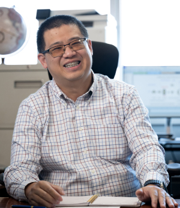
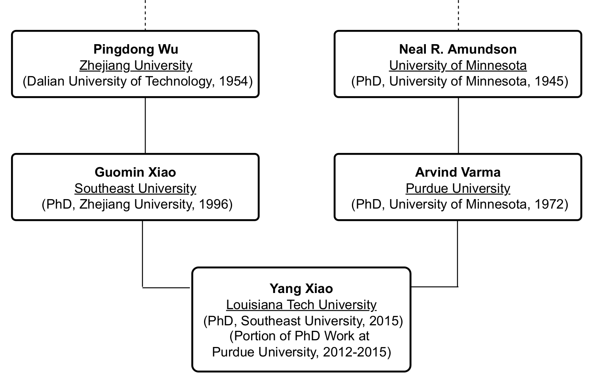
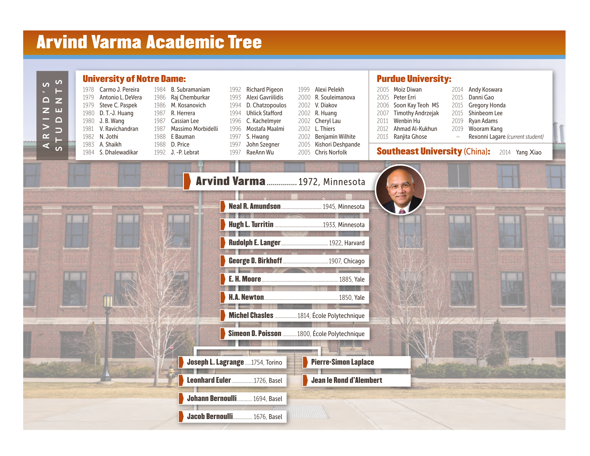

Dr. Yang Xiao, Assistant Professor of Chemical Engineering, Louisiana Tech University.
Curriculum Vitae | Google Scholar | ORCID.
Dr. Yang Xiao was born in Changchun, Jilin Province, P. R. China. He earned his B.S. in Chemical Engineering from Southeast University (Nanjing, China) in 2006. During his doctoral studies, he conducted research at Southeast University under the supervision of Dr. Guomin Xiao (2010–2012) and later at Purdue University under the supervision of Prof. Arvind Varma (2012–2015). He completed his Ph.D. in Chemical Engineering at Southeast University in 2015.
Following his Ph.D., Dr. Xiao joined Prof. Varma’s research group as a Postdoctoral Research Associate (2015–2018) and subsequently served as a Research Scientist (2018–2019). In late 2019, he was promoted to Senior Research Engineer, serving as an independent Principal Investigator (PI) at Purdue University. In March 2022, Dr. Xiao joined Louisiana Tech University as a tenure-track Assistant Professor in Chemical Engineering.
• B.S. in Chemical Engineering, Southeast University (Nanjing, China), 2010.
• Ph.D. in Chemical Engineering, Purdue University/Southeast University, 2015. (Co-advised by Prof. Arvind Varma at Purdue University, 2012-2015 and Prof. Guomin Xiao at Southeast University, 2010-2012)
• Postdoctoral Research Associate, Purdue University (West Lafayette, Indiana, U.S.A.), 2015-2018. (Experimental and modeling research with Prof. Arvind Varma and Computational catalysis research with Prof. Jeffrey Greeley)
• 2018 - 2019: Research Scientist, Purdue University.
• 2019 - 2022: Senior Research Engineer (PI), Purdue University.
• 2022 - present: Assistant Professor of Chemical Engineering, Louisiana Tech University.
• Rising Star in Sustainability, Journal of Sustainability Science and Technology, 2026
• Virgil Orr Junior Faculty Award (finalist), Louisiana Tech University (LaTech) Faculty Senate, 2026
• L. K. Doraiswamy Graduate Seminar Series, Iowa State University, 2026
• College of Engineering and Science Research Award, Louisiana Tech University, 2025
• Doctoral New Investigator Award, ACS Petroleum Research Fund (ACS PRF), 2025
• Early Career Excellence in Research Award, Louisiana Tech University, 2025
• Engineering Research Initiation Award, U.S. National Science Foundation, 2024
• Collaborative Partnership Awards, Louisiana Materials Design Alliance (LAMDA), 2023, 2024, 2025
• Research Enhancement Awards, Louisiana Space Grant Consortium, 2023, 2024
• Yound Investigator Travel Award, 27th International Symposium for Chemical Reaction Engineering, 2023


• Tenure-Track Faculty Search Committee, Chemical Engineering Department, 2024 - 2025
• Executive Committee, Institute for Micromanufacturing, 2023 - 2024
• Strategic Planning Committee - Research Team, College of Engineering and Science, 2023 - 2024
• University Senate (and Executive Committee), Louisiana Tech University, 2024 - 2025
• Guest Editor and Topical Advisory Panel Member for the journal of Catalysts
• Editorial Board Member for the journal of Sustainability
• Senior Member of American Institute of Chemical Engineers (AIChE)
• Member of American Chemical Society (ACS)
• Member of North American Catalysis Society
• Hydrocarbon Conversion (I: Methane; II: Light Alkanes; III: Olefins and Others) (bin chair), AIChE Annual Meeting, Minneapolis, MN, November 8 - 12, 2026.
• C1 Catalysis (symposium organizer), ACS Fall Meeting, Chicago, IL, August 23 - 27, 2026.
• Catalyst Design, Synthesis, and Characterization V: Hydrogenation/Dehydrogenation (session chair), AIChE Annual Meeting, Boston, MA, November 2 - 6, 2025.
• Catalysis on Low Dimensional Materials, AIChE Annual Meeting, San Diego, CA, October 27 - 31, 2024.
• Catalysis on Low Dimensional Materials, AIChE Annual Meeting, Orlando, FL, November 5 - 10, 2023.
• Session III, Southeastern Catalysis Society 2023 Annual Symposium, Tuscaloosa, AL, February 27 - 28, 2023.
• Fundamentals of Catalysis and Surface Science II: Zeolites and Acid Catalysis, AIChE Annual Meeting, Phoenix, AZ, November 13 - 18, 2022.
• Biomass Upgrading I: Reaction Fundamentals, AIChE Annual Meeting, Boston, MA, November 5 - 11, 2021.
• Fundamentals and Strategies for Catalytic Biomass Conversion, AIChE Annual Meeting, Virtual, November 16 - 20, 2020.
ACS Omega, ACS Sustainable Chemistry & Engineering, AIChE Journal, Applied Energy, Applied Catalysis A: General, Applied Surface Science, Asia-Pacific Journal of Chemical Engineering, Biomass and Bioenergy, Biomass Conversion and Biorefinery, Catalysis Communications, Catalysis Letters, Catalysts, Chem, Chem Catalysis, Chemical Engineering and Processing: Process Intensification, Chemical Engineering Journal, Chemical Engineering Science, ChemistrySelect, ChemSusChem, Chinese Journal of Chemical Engineering, ECS Journal of Solid State Science and Technology, Energy Exploration & Exploitation, Energy & Fuels, Fuel Processing, Journal of Environmental Chemical Engineering, Journal of Sustainable Bioenergy Systems, Industrial & Engineering Chemistry Research, Korean Journal of Chemical Engineering, Materials, Molecular Simulation, Molecular Physics, Molecular Catalysis, Molecules, Reaction Chemistry & Engineering, Reviews in Chemical Engineering, Sustainability, and Sustainable Energy & Fuels .